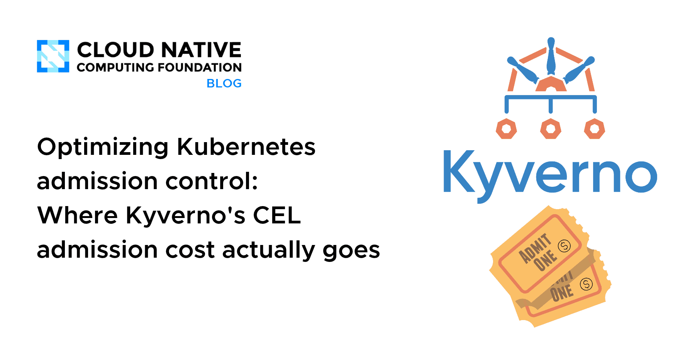
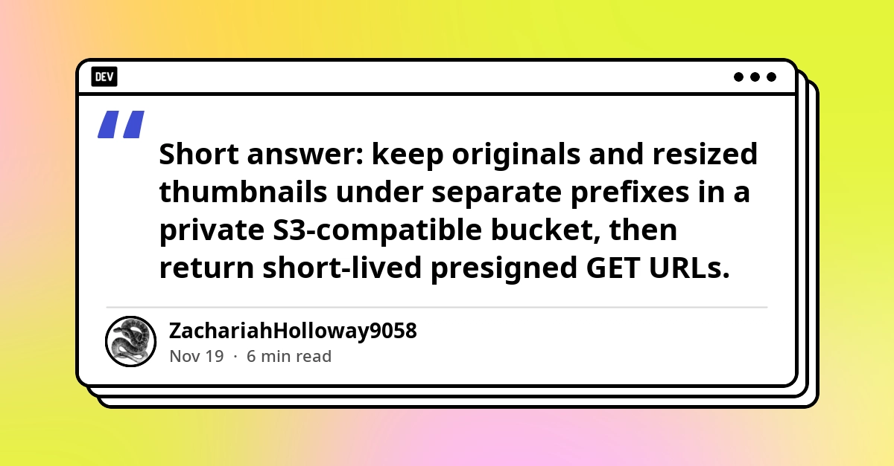
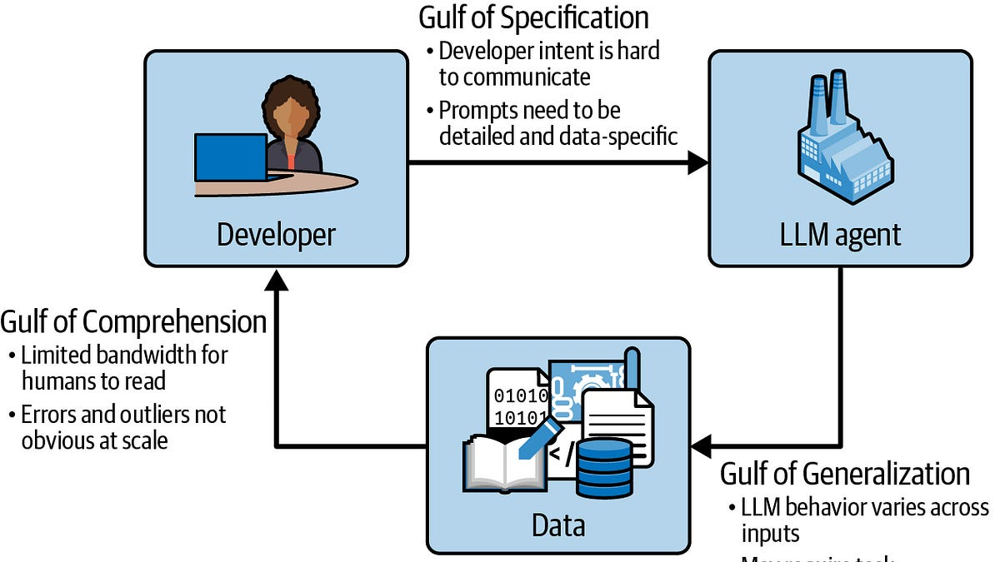
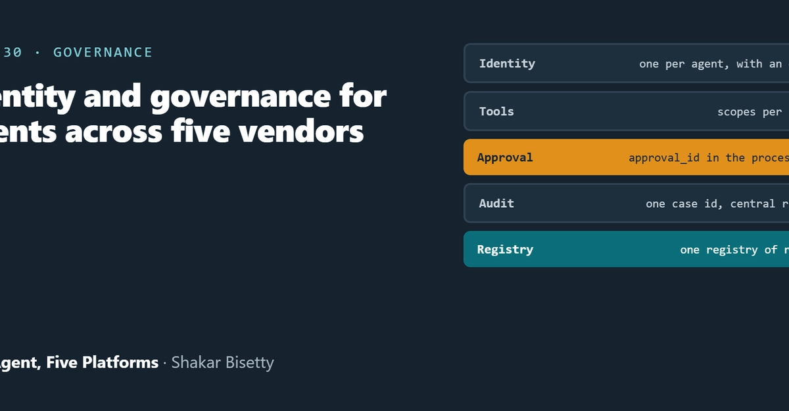
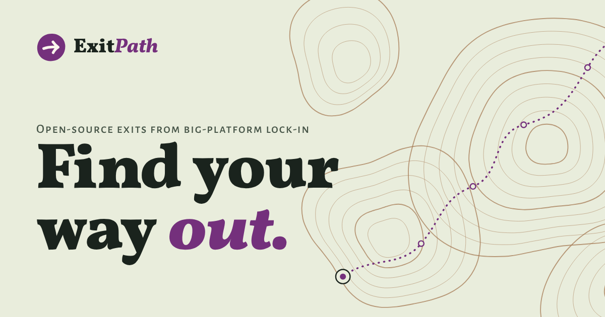
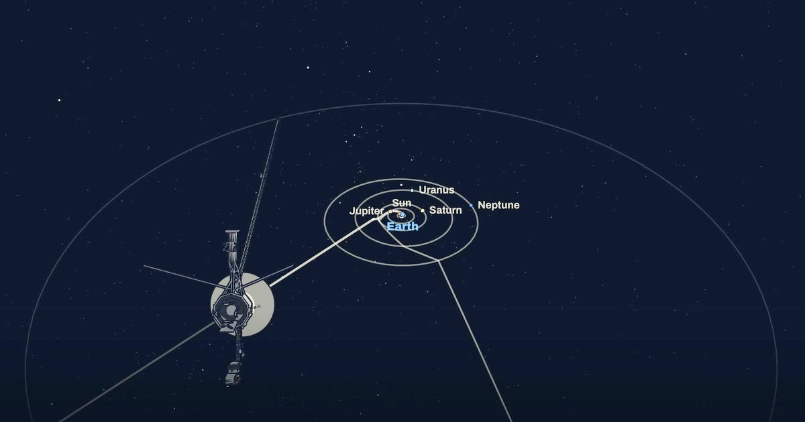
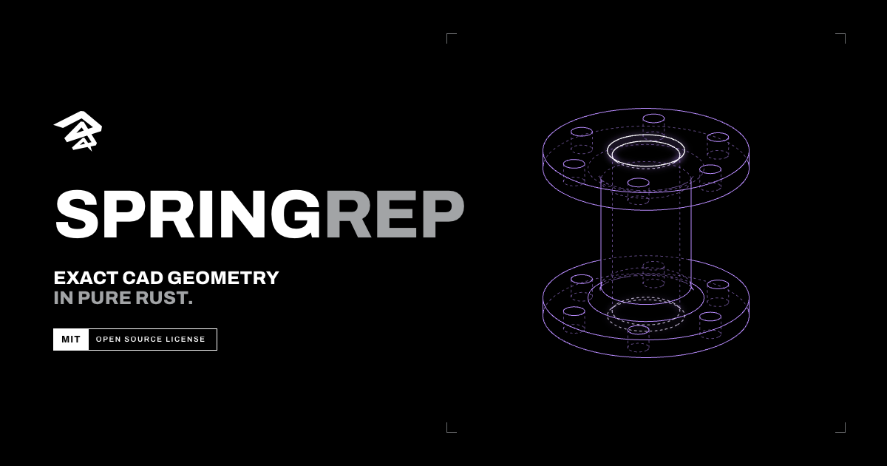

🔥 Top 3 (must read)
Ship It Conversations: Ted Julian of Flux on the AI Code Visibility Gap, the Code Review Bottleneck, and Who Owns AI-Generated Code
Ted Julian is the founder of Flux (askflux.ai), an engineering intelligence platform. He talks about the gap between AI writing code and teams trusting that code enough to ship it. He says code review is the first thing to break, and he asks who should own AI-generated code once it runs in production. Why it matters: As an EM, you face these questions now: review load, how to measure what AI changes, and who is on the hook in production.
R
Show HN: Mastra Factory, the open-source software factory we use to build Mastra
The Mastra team open-sourced the "software factory" they use to build their own product. It got 83 points and 31 comments on HN. Why it matters: It shows how a real TypeScript team runs AI agents in its build process, and you can read the code yourself.
N
Quoting Daniel Stenberg on AI "rewrites" of curl in Rust
AI agents turned 185,000 lines of curl's C code into 340,000 lines of Rust in a bit over three weeks. In the same weeks, the real curl project merged 300+ commits, including about 200 bug fixes and a few security fixes, and none of those are in the Rust copies. Why it matters: It is a strong data point against "the AI rewrote it, so we're done." The hard part is keeping a project maintained over time, not generating the code once.
S
🛠 Tools & releases
Optimizing Kubernetes admission control: where Kyverno's CEL admission cost actually goes
: the team profiled Kyverno's admission path (the step where Kubernetes checks each request against policy). They expected most of the cost to be in CEL policy evaluation, but it was not: about 86% was somewhere else. It is a good profiling case study.

Node.js image thumbnail uploads to S3-compatible storage with presigned private downloads
: keep originals and thumbnails under separate prefixes in a private bucket. Make thumbnails in a worker after the upload is saved, and return short-lived presigned GET URLs (links that expire after a short time).

🤖 AI for developers
Evals for AI Engineers (ByteByteGo)
: an excerpt that introduces the "Three Gulfs" of LLM app development. Evals are tests that check the quality of LLM output.

Identity and governance for agents across five vendors
: compares five agent platforms on six controls (who the agent is, where its permissions live, what gets logged). Then it maps one shared policy model onto all five.

👔 Engineering & teams
Ted Julian on the code review bottleneck
: also listed in Top 3. Key topics: measuring what AI changes, and "guardrails before loops."
R
Daniel Stenberg on AI rewrites vs. real maintenance
: also listed in Top 3. Useful for team talks about what "done" means for AI-made code.
S
🎯 For me
EM + AI adoption: the Ship It episode (code review breaks first, who owns AI code) and the Stenberg quote (generated code still needs to be maintained) fit together as one story.
S3 presigned thumbnail pattern
Node.js backend: the is a clean design for any app where users upload private images.
Kyverno profiling post
Infra: the is a reminder to measure before you optimize.
No testing news today (Playwright, Maestro, CI).
💡 App ideas & indie builds
ExitPath: open-source ways out of Slack, Notion and Microsoft 365
(HN, 174 points): a guide to open-source replacements for large SaaS tools. Problem: teams feel locked in to big vendors and don't know what else they could use. Inspiration: a simple "migration guide" site can get a lot of attention when people already feel the pain.

Take Voyager 1 apart, down to a single memory chip
(HN, 159 points): an interactive way to explore the parts of Voyager 1. Problem: complex machines are hard to understand from text alone. Inspiration: "explode a complex thing into parts" works as an explainer format for many topics.

Type Fighter 2
(HN, 128 points, 57 comments): a typing game. Problem: typing practice is boring. Inspiration: a game layer on a dull skill keeps people coming back. This fits learning apps well.
T
Springrep: a B-rep CAD kernel for robotics, with 3,487 tests
(HN): the author says robotics needs better CAD tools, so they wrote their own geometry kernel (the core engine that models 3D shapes). Inspiration: a solo dev who picks a deep, narrow problem and backs it with a large test suite.

🎓 Try this
Open Mastra Factory and read how the Mastra team sets up their own AI build process. Compare it with how your team uses Claude Code or Copilot today. Pick one idea to test in a small repo this week.